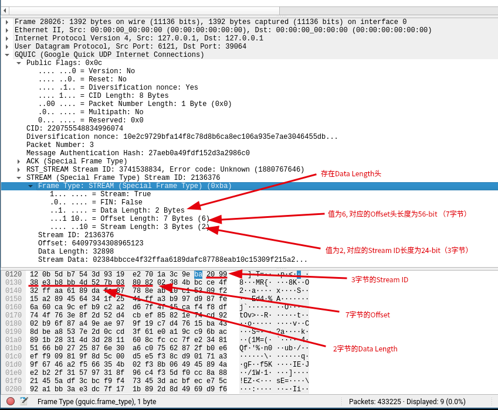

google-quic协议
Table of Contents
1 GOOGLE QUIC
1.1 简介
QUIC（快速 UDP 互联网连接）是一种基于 UDP 的新的多路复用和安全传输设计的协议，针对 HTTP/2 进行了优化。虽然QUIC主要为HTTP/2应用程序协议构建，但是QUIC也实现了一些机制，使其可以作为现代通用传输协议。 QUIC 提供了多路复用和流量控制，TLS 的安全性，类似TCP 的连接语义、可靠性和拥塞控制。
QUIC 完全在用户空间运行。
1.2 术语以及定义
QUIC用到的整型（长度、版本、类型）都是小端序，而非网络字节序。
以下是一些常用到的术语：
- Client
- 初始化QUIC连接的一端
- Server
- 被动接收QUIC连接的一端
- Endpoint
- QUIC连接的client或者server
- Stream
- 跨越QUIC连接中的逻辑通道的双向字节流
- Connection
- 在两个QUIC端点之间的会话。
- Connection ID
- QUIC连接的标识
- QUIC Packet
- 可以被QUIC的接收端解析的UDP载荷。文档中QUIC的报文大小是指UDP载荷大小。
1.3 QUIC概览
QUIC在功能上等同于 TCP+TLS+HTTP/2，但是是基于UDP实现。QUIC相对于 TCP+TLS+HTTP/2的主要优势包含以下方面：
- 建立连接的延时
- 灵活的拥塞控制
- 多路复用，并且不会队头阻塞（pipelining请求）
- 具有身份验证，加密header和payload
- Stream和连接的流控
- 连接迁移
1.3.1 建立连接的延迟
QUIC合并了加密和握手传输，减少建立安全连接所需要的往返次数。 QUIC连接通常是0-RTT，也就意味着在大多数的QUIC连接中，数据可以被立即发送而不需要等待server的回复。而TCP+TLS的方式中，应用发送数据前需要1-3次的往返。
QUIC提供了专门的stream（Stream ID 1）用来握手。完整的握手协议可以参考https://docs.google.com/document/d/1g5nIXAIkN_Y-7XJW5K45IblHd_L2f5LTaDUDwvZ5L6g/edit。
1.3.2 灵活的拥塞控制
QUIC有可插拔的拥塞控制以及比TCP更丰富的信令，使得QUIC为拥塞控制算法提供更加丰富的信息。当前默认的拥塞控制是TCP cublic的重新实现。
例如，无论是原始的还是重传的报文，都带有一个新的seq number。 这允许发送者区别重传数据的ACK还是原始数据的ACK，从而避免TCP的重传歧义的问题。QUIC在收到数据包和发送确认之间会有延迟，以及单调增加的数据包数量，使得可以更加精确的计算往返时间（RTT）。
“更丰富的信息的一个例子是每个数据包，无论是原始的还是重传的，都带有一个新的数据包序列号。这允许 QUIC 发送方将重传的 ACK 与原始传输的 ACK 区分开来，从而避免 TCP 的重传歧义问题。 QUIC ACK 还明确携带接收数据包与其发送确认之间的延迟，以及单调增加的数据包数量，这允许精确的往返时间 (RTT) 计算。最后，QUIC 的 ACK 帧最多支持 256 个 ack 块，因此 QUIC 比 TCP（使用 SACK）更能适应重新排序，并且能够在重新排序或丢失时在线路上保留更多字节。客户端和服务器都可以更准确地了解对等方收到了哪些数据包——
1.3.3 Stream和连接的流控
QUIC实现了stream级别和connnection级别的流控，。 QUIC stream级别的流控原理如下： QUIC接收者在每个stream中通告通告自身可以接收的字节数，当在特定stream上数据被发送、接收或者交付，接收者发送WINDOW_UPDATE帧，以增加stream的通告偏移限制，以允许对端发送更多的数据。
connection级别的连接控制： 限制QUIC接收端分配给连接的冲区。connection的流控原理和stream的流控相同，但是递送的字节数和最高接收偏移是所有stream的总量。
1.3.4 多路复用
基于TCPHTTP/2存在tcp head-of-line阻塞的问题，如果丢失一个tcp segment会导致阻塞所有后续的segment，直到重传的segment到达。
而在QUIC中不会有此问题。QUIC中，一个stream中的报文丢失，通常只影响该stream。每个stream帧在到达后可以被立即分派到对应的stream，只要本stream中没有丢失报文，仍然可以继续组装，而后被应用程序处理。
1.3.5 Header和Payload的认证和加密
QUIC数据包总是经过认证的，且payload通常被全部加密。header中的未被加密的部分仍然需要被接收者认证，使得第三方无法进行数据的注入或修改。QUIC可以保护端到端的连接不会被中间件操控。
注：PUBLIC_RESET报文会重置未经过认证的连接。
1.3.6 连接迁移
在TCP中，一条连接由四元组标识（sip、sport、dip、dport），当ip或者端口发生变更时，连接无法继续保持。
QUIC中的连接通过client随机生成的64位Connection ID来标识。所以QUIC中可以接受IP地址更改或者NAT重新绑定，因为QUIC的Connection ID在迁移中保持不变。由于客户端迁移后使用相同的会话密钥来加密和解密数据包，所以QUIC可以对其进行自动加密验证。
当连接是通过四元组标识（例如server使用临时端口向客户端发送数据包）的时候，可以选择不发送Connection ID。
1.4 报文类型和格式
QUIC报文有特殊特殊报文和普通报文。
特殊报文：版本协商报文，公开复位报文。 普通报文：包含帧的常规报文。
QUIC数据包大小应当适应路径MTU的大小以避免IP分片。当前QUIC的实现为IPv6使用了1350字节大小的MTU，IPv4使用的1370字节，大小不包含IP和UDP头。
1.4.1 QUIC公共报文头
所有的QUIC报文都以公共报文头开始，大小在1-51字节之间。其格式如下：
0 1 2 3 4 8 +--------+--------+--------+--------+--------+--- ---+ | Public | Connection ID (64) ... | -> |Flags(8)| (optional) | +--------+--------+--------+--------+--------+--- ---+ 9 10 11 12 +--------+--------+--------+--------+ | QUIC Version (32) | -> | (optional) | +--------+--------+--------+--------+ 13 14 15 16 17 18 19 20 +--------+--------+--------+--------+--------+--------+--------+--------+ | Diversification Nonce | -> | (optional) | +--------+--------+--------+--------+--------+--------+--------+--------+ 21 22 23 24 25 26 27 28 +--------+--------+--------+--------+--------+--------+--------+--------+ | Diversification Nonce Continued | -> | (optional) | +--------+--------+--------+--------+--------+--------+--------+--------+ 29 30 31 32 33 34 35 36 +--------+--------+--------+--------+--------+--------+--------+--------+ | Diversification Nonce Continued | -> | (optional) | +--------+--------+--------+--------+--------+--------+--------+--------+ 37 38 39 40 41 42 43 44 +--------+--------+--------+--------+--------+--------+--------+--------+ | Diversification Nonce Continued | -> | (optional) | +--------+--------+--------+--------+--------+--------+--------+--------+ 45 46 47 48 49 50 +--------+--------+--------+--------+--------+--------+ | Packet Number (8, 16, 32, or 48) | | (variable length) | +--------+--------+--------+--------+--------+--------+
- Public Flags ：
- 0x01 = PUBLIC_FLAG_VERSION。其含义取决于数据包是由server发送还是client发送。由client发送时，标识包含的QUIC 版本。在服务器确认同意cleint的版本之前，client的每个数据包都必需置1，server通过将发送的数据包中的该位清零来表示同意版本。由server将该标志位置位时，标识该数据包为版本协商数据包。
- 0x02 = PUBLIC_FLAG_RESET。置位时标识这是一个公开重置报文。
- 0x04 = 标识header中存在32字节的机数。
- 0x08 = 标识报文中存在8字节的完整Connection ID。所有的报文都必须设置此标志，除非给定方向协商一个不同的值（例如：客户端要求更少字节的Connection ID）。
- 0x30位置处的两位，代表每个数据包中存在数据包编号的低位字节数。这两位仅仅用于帧数据包。对于公共重置包或者server发送的版本协商包没有数据包编号，这两位不使用且需要置零。
- 0x30 = 代表存在6字节的数据包编号
- 0x20 = 代表存在4字节的数据包编号
- 0x10 = 代表存在2字节的数据包编号
- 0x00 = 代表存在1字节的数据包编号
- 0x40 保留供多路径使用
- 0x80 当前未使用，必须清0
- Connection ID ：64位的无符号随机数，由client生成，作为连接的标识。由于QUIC被设计为即使client漫游时也可以保持连接状态，因此四元组不足以标识一条连接。对于每个传输方向，如果四元组能够标识连接时，可以省略Connection ID。
- QUIC Version ：代表QUIC协议版本的32位不透明标签。只有在PUBLIC FLAG中包含FLAG_VERSION时才存在。client可以设置此标志位，并包含一个确切的版本以及符合版本的任意数据。server在不支持client建议的版本时，也可以设置此标志，并提供能够支持的版本列表（0到多个），但是在版本之后不能包含任何数据。
Packet Number ：数据包编号是低8位、低16位、低32位还是低48位，取决于Public Flag中的0x30位置的标志位。每个常规的数据包的数据包编号由发送方来指定。端点发送的第一个数据包的数据包编号应为1，后续的每个数据包的数据包编号应当大于前一个数据包的数据包编号。
（不太理解，编号最大才48位，为何这个地方是64位）数据包编号的低64位作为加密随机数的一部分；端点不能发送64位之外的数据包编号。如果QUIC端点发送一个编号为264-1的数据包，同时也需要包含一个CONNECTION_CLOSE帧并携带QUIC_SEQUENCE_NUMBER_LIMIT_REACHED错误码，端点不能传输任何额外的数据包。
数据包编号最多会传输其低48位，为了使接收方能够明确重新获取到数据包编号，QUIC端点不能传输比（2bitlength-2）更大的已经由接收方发送确认的最大数据包编号。因此，传输中的数据包绝不能超过246个。
（不太理解）任何被截断的数据包编号，都应被推断为最接近于比最大已知数据包编号多一的值。数据包编号的传输部分与推断值的最低位匹配。
Public Flags的处理流程如下：
Check the public flags in public header | | V +--------------+ | Public Reset | YES | flag set? |---------------> Public Reset Packet +--------------+ | | NO V +------------+ +-------------+ | Version | YES | Packet sent | YES | flag set? |--------->| by server? |--------> Version Negotiation +------------+ +-------------+ Packet | | | NO | NO V V Regular Packet Regular Packet with QUIC Version present in header
1.4.2 特殊的报文
1.4.2.1 版本协商报文
只有server才会发送版本协商报文。报文的最开头是8-bit的Public Flags和64-bit的Connection ID。 Public Flags中必须设置PUBLIC_FLAG_VERSION并且指示64-bit的Connection ID。版本协商报文的其余部分是server支持的4字节版本列表：
0 1 2 3 4 5 6 7 8 +--------+--------+--------+--------+--------+--------+--------+--------+--------+ | Public | Connection ID (64) | -> |Flags(8)| | +--------+--------+--------+--------+--------+--------+--------+--------+--------+ 9 10 11 12 13 14 15 16 17 +--------+--------+--------+--------+--------+--------+--------+--------+---...--+ | 1st QUIC version supported | 2nd QUIC version supported | ... | by server (32) | by server (32) | +--------+--------+--------+--------+--------+--------+--------+--------+---...--+
1.4.2.2 Public Reset报文
报文的最开头是8-bit的Public Flags和64-bit的Connection ID。 Public Flags中必须设置PUBLIC_FLAG_RESET并且指示64-bit的Connection ID。报文的其余部分被编码。
0 1 2 3 4 8 +--------+--------+--------+--------+--------+-- --+ | Public | Connection ID (64) ... | -> |Flags(8)| | +--------+--------+--------+--------+--------+-- --+ 9 10 11 12 13 14 +--------+--------+--------+--------+--------+--------+--- | Quic Tag (32) | Tag value map ... -> | (PRST) | (variable length) +--------+--------+--------+--------+--------+--------+---
Tag value map:包含以下tag值：
- RNON（Public Reset特定校验）：64位无符号整形
- RSEQ（被拒绝的数据包编号）：64位数据包编号
- CADR（client地址）：观察到的客户端 IP 地址和端口号。目前仅用于调试（可选）。
1.4.2.3 常规报文
常规数据包是被认证和加密的。公共包头被认证但是没有被加密，从第一帧开始的数据包的其余部分都被加密。紧随公共头之后，常规数据包包含 AEAD（经过身份验证的加密和相关数据）数据。数据必须经过解密才能解释内容。解密后，明文由一系列帧组成。
1.4.2.4 帧报文
帧数据包的有效载荷是一系列带有类型前缀的帧。帧数据包的一般格式如下：
+--------+---...---+--------+---...---+ | Type | Payload | Type | Payload | +--------+---...---+--------+---...---+
1.5 QUIC连接的生命周期
1.5.1 连接建立
QUIC的连接由client端初始化。QUIC建立连接时，将版本协商和加密传输握手交织在一起，以减少连接建立延迟。
每个由client向server发送的初始报文必须设置version 标志，并指定要使用的协议版本。在收到server发送的带有version标志为零的报文之前，client发送的每个数据包都必须将version标志置1。在server收到client发送的不带有version标志的报文后，必须忽略任何version标志置1的报文。
server收到新连接的Connection ID后，会将client的版本和自身所支持的版本对比。如果server接受client的版本，server将在连接的生命周期内使用该协议版本，之后server发送的所有数据包都将version标识清零。
如果clinet版本不被server所接受，将产生1-RTT的延迟。server将向client发送版本协商报文。报文中Version标志置位，并包含server支持的版本列表。
client收到server发送的版本协商报文后，会选择一个能够支持的协议版本，并使用该协议版本重新发送数据包。这些数据包必须将version标志置位，并且包含新协商的协议版本。最后，client接收到server发送的第一个常规报文（非版本协商报文），预示着结束版本协商过程，之后client发送的所有文将version标志清零。
为了避免降级攻击，客户端发送第一个指定协议版本的数据包和server支持的版本集合必须包含在加密握手数据中。客户端需要验证握手中的server版本列表是否匹配版本协商报文中的版本列表。server通过握手验证client是否支持其指定的版本。
关于建立连接的其余部分可以参考QUIC-CRYPTO。加密握手使用专门的加密stream来执行（Stream ID 1）。
在连接建立期间，握手必须协商各种传输参数。当前定义的传输参数在文档后面描述
1.5.2 数据传输
QUIC实现了连接的可靠性、拥塞控制和流控。QUIC的流控接近HTTP/2的流控。QUIC连接通过使用单个数据包序号来跨连接共享拥塞控制和丢失恢复。
QUIC连接中传输的所有数据，包括加密握手数据，都被作为数据在stream中发送，不包含ack 确认报文。
本节概念性地描述了在 QUIC 连接中使用流进行数据传输。
1.5.2.1 QUIC stream的声明周期
Streams是被切分为stream帧的独立双向数据序列。Streams可以由client或者server创建，可以与其他stream同时交错发送数据，也可以取消。
Stream的创建是隐式完成的，为给定stream发送一个STREAM帧即可创建。为避免stream ID冲突，当由server初始化时，Stream-ID为偶数，client初始化时为基数。0不是有效的Stream-ID。Stream 1保留用作加密握手，它应当是client初始化的第一个steam。在QUIC之上使用http/2时，Stream 3保留用来传输所有其他stream的压缩头。
随着新的stream被创建，连接中每一端的Stream-ID都必须单调递增。例如，Stream 2可能在Stream 3之后创建，但是Stream 7绝对不会在Stream 9之后被创建。对端可能收到的stream是乱序的。例如，server在接收包含stream7的第9个报文之前，先接收到了包含stream9的第10个报文，它应当能够优雅的处理此问题。
如果接收了STREAM帧的端点不想允许此stream，它可以立即响应RST_STREAM帧。注意，发起端点可能已经在stream中发送了数据，此数据必须被忽略。
一旦stream被创建，它可以用来发送和接收数据。这意味着QUIC端点可以在stream中发送一系列的stream帧，直到对应方向的stream被终止。
任何一端的QUIC端点都可以正常终止stream。以下是stream被终止的三种方式：
- 正常终止： 由于stream是双向的，因此可以被半关闭或者关闭。当一侧的stream发送带有FIN标识的帧时，认为stream在对应方向为半关闭状态。发送者在stream上发送FIN后，不会再发送数据。QUIC端点如果同时收到和发送FIN，认为这个端点为关闭状态。尽管FIN应当和最后一个用户数据一起发送，但也可以在最后一个数据之后使用空帧发送。
- 突然终止：client和server都能够在任意时间发送RST_STREAM帧。RST_STREAM帧包含的错误码代表失败的原因。RST_STREAM帧由发起者发送时，表示无法完成stream，并且不会在stream中发送数据。如果RST_STREAM帧由接收者发起，发送者收到之后应当禁止在stream中发送任何数据。stream接收者应当意识到，在发送者收到RST_STREAM帧之前可能已经发送了一些数据。为了确保连接级别的流控被正确计算，即使发送者收到了RST_STREAM帧后仍需要确保：对端或者收到了stream中的FIN和所有字节，或者收到了RST_STREAM帧。这意为着RST_STREAM帧的发送者仍然需要继续响应接收到的STREAM帧，并使用适当的WINDOW_UPDATES来确保发送者不会因为递送FIN时被流控阻塞。
- 连接终止时，stream也会终止。
1.5.3 连接终止
连接应当保持打开状态，直到在预先协商的时间内空闲。当server决定终止空闲连接时，不应当同志client以避免唤醒移动设备的无线电。QUIC连接一旦被建立，可以通过以下两种方式终止：
- 显式关闭：一端向对端发送CONNECTION_CLOSE帧开始关闭连接。端点可以在发送CONNECTION_CLOSE帧之前先发送GOAWAY帧，表示连接很快会被关闭。GOAWAY帧被发送到对端后，对端可以继续处理任何活动的stream，但GOAWAY帧的发送者不会再启动任何额外的stream，也不会允许新的stream。在活动的stream终止时，可以发送CONNECTION_CLOSE帧。如果端点在活动的未终止的stream（没有为一个或多个流发送或接收 FIN 位或 RST_STREAM ）上发送CONNECTION_CLOSE帧，则对端必须假设stream不完整并且被异常终止。
- 隐式关闭：QUIC连接的默认空闲超时时间为30s，这是协商连接时的必须参数（”ICSL“），最长为10min。如果在超时时间内没有网络数据活动，连接将被关闭。默认情况下会发送CONECTION_CLOSE帧。如果显示关闭连接成本较高时（例如必须唤醒无线电的移动网络），可以启动式关闭选项。
端点也可以在连接期间任意时间发送PUBLIC_RESET报文，以终止活动的连接。QUIC的PUBLIC_RESET和TCP的RST等价。
1.6 帧类型及格式
QUIC帧数据包由帧来填充，帧包含帧类型（自身一个依赖类型的解释），后面紧跟依赖类型的帧头字段。所有帧被包含在一个QUIC数据包中，任何帧都不能跨越QUIC数据包边界。
1.6.1 帧类型
interpretation Frame Type字节有两种解释，产生两种帧类型：特殊帧类型，常规帧类型。特殊帧类型会把帧类型和相应的标志都编码在Frame Type字节中，而常规帧类型仅使用帧类型字节。
当前定义的特殊帧类型：
+------------------+-----------------------------+ | Type-field value | Control Frame-type | +------------------+-----------------------------+ | 1fdooossB | STREAM | | 01ntllmmB | ACK | | 001xxxxxB | CONGESTION_FEEDBACK | +------------------+-----------------------------+
当前定义的常规帧类型：
+------------------+-----------------------------+ | Type-field value | Control Frame-type | +------------------+-----------------------------+ | 00000000B (0x00) | PADDING | | 00000001B (0x01) | RST_STREAM | | 00000010B (0x02) | CONNECTION_CLOSE | | 00000011B (0x03) | GOAWAY | | 00000100B (0x04) | WINDOW_UPDATE | | 00000101B (0x05) | BLOCKED | | 00000110B (0x06) | STOP_WAITING | | 00000111B (0x07) | PING | +------------------+-----------------------------+
1.6.2 STREAM帧
STREAM帧用于隐式的创建stream，并在其上发送数据：
0 1 … SLEN +--------+--------+--------+--------+--------+ |Type (8)| Stream ID (8, 16, 24, or 32 bits) | | | (Variable length SLEN bytes) | +--------+--------+--------+--------+--------+ SLEN+1 SLEN+2 … SLEN+OLEN +--------+--------+--------+--------+--------+--------+--------+--------+ | Offset (0, 16, 24, 32, 40, 48, 56, or 64 bits) (variable length) | | (Variable length: OLEN bytes) | +--------+--------+--------+--------+--------+--------+--------+--------+ SLEN+OLEN+1 SLEN+OLEN+2 +-------------+-------------+ | Data length (0 or 16 bits)| | Optional(maybe 0 bytes) | +------------+--------------+
STREAM帧头中的字段如下：
- Frame Type ：Frame Type字节是一个8-bit的值，包含了各种标志（1fdooossB）。
- 最左边的比特位必须置1，表示是一个STREAM帧。
- ‘f’比特位是FIN标志，置1时表示发送者在此stream上发送完成，希望进入”half-close“状态。
- ’d‘比特位表示STREAM头中是否指定了数据长度。置0时，表示STREAM帧扩展到报文的末尾。
- 紧接着的三个’ooo‘比特位表示Offset header字段被编码的长度，分别对应0,16,24,32,40,48,56,64 比特的长度。
- 最后的‘ss’比特位表示Stream ID被编码的长度，分别对应8,16,24,32比特的长度。
- Stream ID ：表示对应stream的可变长度的无符号唯一ID。
- Offset ：可变长度的无符号整数，表示数据块在stream中的字节偏移量。
- Data length ：一个可选的16位无符号整数，指定stream帧中的数据长度。只有当数据包是”full-sized“时才省略长度选项。
stream帧必须具有非零长度的数据，否则FIN标志必须置位。

1.6.3 ACK帧
ACK帧用来通知对端哪些数据包被接收了。ACK帧包含了1-256个ack块。ACK块是确认数据包的范围，类似TCP的SACK块，但是QUIC没有等效于TCP的累计确认点，因为数据包是使用新的seq号传输的。
为了将ACK块限制为尚未被对端接收到的块，对端定期发送STOP_WAITING帧来通知接收方停止确认低于指定seq号的数据包，提升接收端”最小未确认"数据包编号。（###########不确认理解是否正确############# 因此ACK帧的发送端仅报告在接收到的最小未确认到上报的最大数据包号之间的ACK块。）。 建议发送端在已经接收到的ack中选择最近最大的已确认报文，作为停止等待的“最小未确认”值来发送。
作为 QUIC 已弃用的熵的替代，发送方可以有意跳过数据包编号以将熵引入连接。如果未发送的数据包编号被确认，发送方始终应当关闭连接，因此该机制会自动防御任何潜在的攻击者。 ack格式在表示丢失数据块方面很高效，对接收方和发送方的成本很低，并且可以按需提供最高8 位的熵，而不是恒定的8位熵。
偏移段： 0：ACK帧的起始位置 T：时间戳的起始字节偏移 A：ACK块的起始字节偏移 N：确认的最大字节长度
0 1 => N N+1 => A(aka N + 3) +---------+-------------------------------------------------+--------+--------+ | Type | Largest Acked | Largest Acked | | (8) | (8, 16, 32, or 48 bits, determined by ll) | Delta Time (16) | |01nullmm | | | +---------+-------------------------------------------------+--------+--------+ A A + 1 ==> A + N +--------+----------------------------------------+ | Number | First Ack | |Blocks-1| Block Length | | (opt) |(8, 16, 32 or 48 bits, determined by mm)| +--------+----------------------------------------+ A + N + 1 A + N + 2 ==> T(aka A + 2N + 1) +------------+-------------------------------------------------+ | Gap to next| Ack Block Length | | Block (8) | (8, 16, 32, or 48 bits, determined by mm) | | (Repeats) | (repeats Number Ranges times) | +------------+-------------------------------------------------+ T T+1 T+2 (Repeated Num Timestamps) +----------+--------+---------------------+ ... --------+------------------+ | Num | Delta | Time Since | | Delta | Time | |Timestamps|Largest | Largest Acked | |Largest | Since Previous | | (8) | Acked | (32 bits) | | Acked |Timestamp(16 bits)| +----------+--------+---------------------+ +--------+------------------+
ACK帧中的字段描述如下：
- Frame Type ：一个8比特的值，包含了各种标志（01nullmmB）。
- 开头的两个比特位必须设置位01，表示这是一个ACK帧。
- ‘n’比特位表示该帧是否确认一个以上的数据块。
- ‘u’比特位没有使用
- ‘ll’比特位表示Largest Observed字段的编码长度，分别对应1,2,4,6字节。
- ‘mm’比特位表示Missing Packet Sequence Number Delta字段的编码长度，分别对应1,2,4,6字节。
- Largest Acked ：可变长度的无符号值，表示对端观察到的最大数据包数。
- Largest Acked Delta Time ：一个 16 位无符号浮点数，11位尾数和 5位指数。指定从收到最大确认到发送Ack帧所i经过的时间（微妙）。
- Ack Block Section ：
- Num Blocks：一个可选的8比特无符号值，比ack块数少1。仅当‘n’比特位置1时存在。
- Ack block length：可变长度的数据包数。对于首个丢失的数据包区间，ack块从已确认最大值开始。对于第一个ack块，其长度为（此值+1）。对于后续的ack块，则为ack块的长度。对于非首块，如果为0,表示超过256个报文丢失。
- Gap to next block：8比特的无符号值，指定ack块之间的报文数量。
- Timestamp Section ：
- Num Timestamp ：8比特的无符号值，指定包含在ack帧中的数间戳。时间戳后会有一些成对的<packet number, timestamp>字段。
- Delta Largest Observed ：
An 8-bit unsigned value specifying the packet number delta from the first timestamp to the largest observed. Therefore, the packet number is the largest observed minus the delta largest observed. - First Timestamp ：
A 32-bit unsigned value specifying the time delta in microseconds, from the beginning of the connection of the arrival of the packet specified by Largest Observed minus Delta Largest Observed. - Delta Largest Observed (Repeated) ：同上
- Time Since Previous Timestamp(Repeated) ：16 位无符号值，指定与前一个时间戳的增量。和 Ack Delay Time的编码格式相同。
1.6.4 STOP_WAITING帧
STOP_WAINTING帧用来通知对端不应该继续等待小于指定数据包号的数据。数据包号编码为1,2,4,6字节，和为封闭数据包头的数据包编号指定的编码长度相同。
0 1 2 3 4 5 6 +--------+--------+--------+--------+--------+-------+-------+ |Type (8)| Least unacked delta (8, 16, 32, or 48 bits) | | | (variable length) | +--------+--------+--------+--------+--------+--------+------+
STOP_WAITING帧中的字段：
- Frame Type ：8-bit的值，必须设置为0x06,表示这是STOP_WAITING帧。
- Least Unacked Delta ： 一个可变长度的包号增量，长度与包头的包号相同。从包头的数据包编号中减去它以确定最小未确认包号。得到的最小未确认包号是发送方仍在等待确认的所有数据包的最小数据包编号。如果接收端丢失任何小于此值的数据包，接收方应将这些数据包视为不可恢复的丢失。
1.6.5 WINDOW_UPDATE帧
WINDOW_UPDATE帧用来通知对端增加端点的流控接收窗口。Stream ID为0时表示WINDOW_UPDATE帧是针对连接的流控窗口，大于0表示指定的stream应当增加它的流控窗口。
如果指定了字节偏移量， WINDOW_UPDATE帧的接收端最多能在指定的stream上发送该字节数。如果不遵守流控，发送更多的字节会导致接收端关闭连接。
在特定的Stream ID的stream中接收到多个WINDOW_UPDATE帧时，使用最大字节偏移。
stream窗口和会话窗口的起始值默认都是16KB，通常在握手期间会增加。端点应当在握手中协商SFCW（stream流控窗口）和CFCW（连接/会话流控窗口）参数。每个标签关联的值，应该分别是初始stream窗口和初始连接窗口的字节数。
0 1 4 5 12 +--------+--------+-- ... --+-------+--------+-- ... --+-------+ |Type(8) | Stream ID (32 bits) | Byte offset (64 bits) | +--------+--------+-- ... --+-------+--------+-- ... --+-------+
WINDOW_UPDATE帧的字段如下：
- Frame Type ：8-bit的值，必须设置为0x04,表示这是一个WINDOW_UPDATE帧。
- Stream ID ：指示需要更新流控窗口的stream的ID，为0时代表连接级别的流控窗口。
- Byte offset ：64-bit无符号整数，指示可以在指定stream上发送数据的字节偏移。对于连接级别的流控，代表可以在当前打开的stream上发送的累积字节数。
1.6.6 BLOCKED帧
BLOCKED帧用来通知对端，本端有数据要发送，但是当前被流控阻塞了。这是一个提示帧，对调试很有帮助。BLOCKED帧的接收端应当直接丢弃。
0 1 2 3 4 +--------+--------+--------+--------+--------+ |Type(8) | Stream ID (32 bits) | +--------+--------+--------+--------+--------+
BLOCKED帧中的字段：
- Frame Type ：8-bit的值，必须设置为0x05,表示这是一个BLOCKED帧。
- Stream ID ：32-bit无符号整数，表示哪个stream被流控阻塞。非0的Stream ID指定被流控阻塞的stream。为0,则表示在连接级别被流控阻塞。
1.6.7 CONGESTION_FEEDBACK帧
CONGESTION_FEEDBACK帧一个实验性的帧，当前未使用。目的是提供标准ack帧范围之外的额外拥塞反馈信息。CONGESTION_FEEDBACK帧的Frame Type的前三个比特为需要设置为001。Frame Type的后5个比特位保留，供未来使用。
1.6.8 PADDING帧
PADDING帧使用0x00字节来填充数据包。碰到PADDING帧时，数据包的其余部分为填充字节。PADDING帧中包含0x00字节，一直填充到QUIC数据包末尾。PADDING帧只有一个Frame Type字段，并且8-bit的Frame Type字段设置为0x00。
1.6.9 RST_STREAM帧
RST_STREAM帧允许异常终止stream。当stream的创建者发送该帧后，表示创建者希望撤销此stream。如果是stream的接收者发送的此帧，表示接收者遇到错误或者不允许创建此stream，此时stream应当被关闭。
0 1 4 5 12 8 16 +-------+--------+-- ... ----+--------+-- ... ------+-------+-- ... ------+ |Type(8)| StreamID (32 bits) | Byte offset (64 bits)| Error code (32 bits)| +-------+--------+-- ... ----+--------+-- ... ------+-------+-- ... ------+
RST_STREAM帧的字段：
- Frame Type ：8-bit的值，必须设置为0x01,表示这是一个RST_STREAM帧。
- Stream ID ：32-bit的STREAM ID，表示应当被终止的stream。
- Byte offset ：64-bit的无符号整数，表示stream的数据末尾的字节偏移。
- Error code ：32-bit的QuicErrorCode，表示stream被关闭的原因。
1.6.10 PING帧
PING帧用来测试对端是否仍然存活。PING帧不包含数据载荷。接收到PING帧后应当应答包含此帧的数据包。当stream被打开时用PING帧来保活连接。默认是在空闲15s后发送PING帧，这比多数的NAT超时短。PING帧只有一个Frame Type字段，必须将其设置为0x07。
默认是在静止 15 秒后执行此操作，这比大多数 NAT 超时要短得多。 PING 帧只有一个 Frame Type 字段，并且必须将 8 位 Frame Type 字段设置为 0x07。
1.6.11 CONNECTION_CLOSE帧
CONNECTION_CLOSE帧用来通知连接将被关闭。当连接关闭时，如果有stream在传输，这些stream都被隐式关闭。
0 1 4 5 6 7 +--------+--------+-- ... -----+--------+--------+--------+----- ... |Type(8) | Error code (32 bits)| Reason phrase | Reason phrase | | | length (16 bits)|(variable length) +--------+--------+-- ... -----+--------+--------+--------+----- ...
CONNECTION_CLOSE帧的字段：
- Frame Type : 8-bit的值，必须设置为0x02，表示这是一个CONNECTION_CLOSE帧。
- Error Code : 32-bit的QuicErrorCode值，代表连接被关闭的原因。
- Reason Phrase Length : 16-bit的无符号整数，指定原因描述的长度。如果发送端选择不提供除QuicErrorCode 以外的详细信息，则可能为零。
- Reason Phrase : 关于连接被关闭原因的更加易读的解释（可选）。
1.6.12 GOAWAY帧
GOAWAY帧用来通知此连接应当停止使用，此连接将要被终止。任何活动的stream还可以继续处理，但是GOAWAY的发送端不再会启动新的stream，也不允许新stream。
0 1 4 5 6 7 8
+--------+--------+-- ... -----+-------+-------+-------+------+
|Type(8) | Error code (32 bits)| Last Good Stream ID (32 bits)| ->
+--------+--------+-- ... -----+-------+-------+-------+------+
9 10 11
+--------+--------+--------+----- ...
| Reason phrase | Reason phrase
| length (16 bits)|(variable length)
+--------+--------+--------+----- ...
GOAWAY帧：
- Frame Type : 8-bit的值，需要设置为0x03,表示这是一个GOAWAY帧。
- Error Code : 32-bit的QuicErrorCode值，代表连接被关闭的原因。
- Last Good Stream ID : GOAWAY的发送端最后一次接受的Stream ID。如果没有则设置为0。
- Reason Phrase Length : 16-bit的无符号整数，指定原因描述的长度。如果发送端选择不提供除QuicErrorCode 以外的详细信息，则可能为零。
- Reason Phrase : 关于连接被关闭原因的更加易读的解释（可选）。
1.7 QUIC传输参数
握手过程，会协商QUIC连接的各种传输参数。
1.7.1 必须的参数
- SFCW - Stream流控窗口。stream级别的流控窗口大小（字节）。
- CFCW - 连接流控窗口。连接级别的流控窗口大小（字节）。
1.7.2 可选参数
- SRBF - Socket接收缓冲区字节大小。如果对端担心有时会延迟从内核缓冲区读取数据包，则可能希望将其CWND（拥塞窗口）最大值设置为近似socket缓冲区的值。默认为256Kbtyes, 最小值为16Kbtytes.
- TCID - 截断Connection ID。表示支持截断Connection ID。如果由对端发送，表示给对端发送的Connection ID应当被截断为0字节。 当一个客户端的临时端口仅用于单个连接时，可以截断Connection ID。
- COPT - 连接选项是一个重复的标签字段。该字段包含了client或者server所要求的所有连接选项。该选项通常用于实验，并且还在演进。其用例包括更改拥塞控制算法及参数，比如初始窗口。
1.8 QuicErrorCodes
QuicErrorCodes定义在Chromium源码目录的 src/net/quic/quic_proto.h 文件中。
- QUIC_NO_ERROR: 没有错误。该错误码对RST_STREAM和CONNECTION_CLOSE帧无效。
- QUIC_STREAM_DATA_AFTER_TERMINATION: 在FIN或者RESET之后收到数据包。
- QUIC_SERVER_ERROR_PROCESSING_STREAM: 由于某些服务器的错误导致停止处理stream。
- QUIC_MULTIPLE_TERMINATION_OFFSETS: 发送端在单个stream上收到两个不匹配的fin或者reset 偏移。
- QUIC_BAD_APPLICATION_PAYLOAD: 发送端收到损坏的的应用数据。
- QUIC_INVALID_PACKET_HEADER: 发送端收到了畸形数据包头。
- QUIC_INVALID_FRAME_DATA: 发送端收到了无效的帧数据。以下是一些可能的情况。
- QUIC_INVALID_FEC_DATA: 畸形的FEC数据。
- QUIC_INVALID_RST_STREAM_DATA: RST_FRAME帧数据畸形。
- QUIC_INVALID_CONNECTION_CLOSE_DATA: CONNECTION_CLOSE帧数据畸形。
- QUIC_INVALID_ACK_DATA: ACK数据畸形。
- QUIC_DECRYPTION_FAILURE: 解密时出现错误。
- QUIC_ENCRYPTION_FAILURE: 加密时出现错误。
- QUIC_PACKET_TOO_LARGE: 数据包超过了最大限制（MaxPacketSize）。
- QUIC_PACKET_FOR_NONEXISTENT_STREAM: 在一个已经不存在的stream上发送数据。
- QUIC_CLIENT_GOING_AWAY: client离开(例如浏览器关闭)。
- QUIC_SERVER_GOING_AWAY: server离开（例如server重启）。
- QUIC_INVALID_STREAM_ID: Stream ID无效。
- QUIC_TOO_MANY_OPEN_STREAMS: 太多打开的stream。
- QUIC_CONNECTION_TIMED_OUT: 预协商超时，或者默认超时。
- QUIC_CRYPTO_TAGS_OUT_OF_ORDER: 握手消息包含了乱序的tag。
- QUIC_CRYPTO_TOO_MANY_ENTRIES: 握手消息中包含了太多条目。
- QUIC_CRYPTO_INVALID_VALUE_LENGTH: 握手消息中包含无效的值长度。
- QUIC_CRYPTO_MESSAGE_AFTER_HANDSHAKE_COMPLETE: 在握手完成后收到了一条加密消息。
- QUIC_INVALID_CRYPTO_MESSAGE_TYPE: 收到一条带有非法消息标签的加密消息。
- QUIC_SEQUENCE_NUMBER_LIMIT_REACHED: 传输额外的数据包将会重用数据包编号。
1.9 优先级
QUIC使用HTTP/2的优先级机制。粗略的讲，一个stream可能会依赖另一个stream。这种情况下，父stream应当使子stream挨饿。另外父stream具有切的优先级。父stream不应当饿死其他的父stream，而应当根据其优先级比例进行处理。
1.10 基于QUIC的HTTP/2分层
由于QUIC将HTTP/2的机制和传输层机集成在一起，QUIC实现了许多在HTTP/2中指定的特性。因此QUIC允许使用QUIC的实现替代HTTP/2机制，减少HTTP/2协议的复杂性。本节简要描述如何通过QUIC提供HTTP/2的语义。
1.10.1 Stream管理
当使用QUIC发送HTTP/2的头和数据时，由QUIC层处理大部分的stream管理工作。HTTP/2的Stream ID被QUIC的Stream ID替代。使用QUIC时，HTTP/2不需要任何stream帧，HTTP/2的header和body被包含在QUIC的数据中发送。当QUIC stream在相应的方向被关闭时，认为请求和响应已经完成。
Stream的流控也由QUIC处理，因此不需要在HTTP/2中再次实现。QUIC的流控制器替代了两个当前HTTP/2中部署的流量控制器，一个是HTTP/2的，一个是TCP的。
1.10.2 HTTP/2 头部压缩
QUIC为HTTP/2实现了HPACK头部压缩（RFC7541），者同时也引入了Head-of-Line阻塞，因为HTTP/2 header块必须按照压缩的顺序来进行解压缩。
由于接收端在处理stream时可能是任意顺序，因此在专门的header stream（Stream ID 3）上发送所有header，以保证header的严格排序。因此，使用QUIC协议的HTTP/2接收者在header stream中收到对应的header后才处理stream中的数据。
未来的工作将调整QUIC中的压缩和解压缩，以便压缩的输出不会依赖未确认的先前压缩状态。这或许可以通过创建HPACK状态的“checkpoints”来完成，“checkpoints”将在被确认后更新。在压缩header时，QUIC会相对于之前的“checkpoints”进行压缩。
未来的工作将调整 QUIC 中的压缩器和解压缩器，以便压缩输出不依赖于未确认的先前压缩状态。这可能可以通过创建 HPACK 状态的“检查点”来完成，这些检查点在头被确认时更新。压缩标头时，QUIC 只会相对于之前的“检查点”进行压缩
1.10.3 解析HTTP/2头
在专门的header stream上只发送HTTP/2 HEADERS帧。这些帧的格式的说明可以参考[RFC7540]6.2章节。
1.10.4 HTTP中的QUIC协商
Alternate-Protocol头部用于为未来的http请求协商使用QUIC。如果想指定QUIC作为替代协议，端口为123，则使用以下头部：
"Alternate-Protocol: 123:quic"
client收到Alternate-Protocol头后，可以尝试在此域名上使用QUIC作为安全连接。由于中间设备或者防火墙可能阻塞QUIC和UDP通信，client应当能够在QUIC被阻塞时切换回TCP。
注意，server可能会在响应的Alternate-Protocol头中包含多个字段值或者逗号分割的字段值，表示其支持不同传输的协议。
server也可以通过发送一个header来通知，此域名不可以使用QUIC。如果server发送了alternate-protocol-required头，client应当牢记未来不要在此域名使用QUIC，并且不能使用UDP探测QUIC是否可用。
1.11 握手协议要求
QUIC提供了专门的stream（Stream ID 1）来执行组合连接和安全握手。以下列表记录当前握手原型的属性，未来的握手协议应当提供这些属性。
1.11.1 使用0-RTT建立连接
QUIC握手协议成功的为大多数的连接实现了0-RTT，这是减少QUIC延迟的关键。
1.11.2 源地址欺骗防御
TCP通过SYN和SYN_ACK的交换验证client的地址，而QUIC中使用server在先前的连接中递送源地址token来验证。
1.11.3 不透明的源地址Token
QUIC中，server在源地址token中存储了多条数据，用于同样的client发起的后续连接。这包含了最近client使用的源地址，测量的client带宽，server指定的connection ID（用于无状态的REJ）。使用源地址token替代握手协议需要满足：client不透明，足够的容量存储这些信息位。 或者，握手协议应当具有不同的方法将这些信息存储在client。
1.11.4 协商传输参数
除了协商加密参数，QUIC 握手协议还协商 QUIC 和 HTTP/2 级别的参数，包括最大打开 QUIC stream和其他 QUIC 连接选项。
1.11.5 证书压缩
QUIC握手会压缩证书，以便REJ（包括常见的Google证书链）能够填充到两个1350字节的数据包中。这有助于在不减少QUIC 0-RTT速率的情况下降低放大攻击印迹。
1.11.6 Server配置更新
QUIC使用Server Confing Update(SCUP)消息来刷新 source-address toker（STK）和server配置的mid-connection，延长client可以建立0-RTT连接的期限。
1.12 最近的版本变更
- Q009: 在spdy stream前4字节上添加属性。
- Q010: 将帧类型重新编号。
- Q011: 将fnv128 hash在NULL上的加密报文由16字节缩减为12字节。
- Q012: 优化ACK帧格式以减少帧大小且更好的处理nack范围，这应该使acks几乎不可能被截断。还为截断的ack添加一个显式标志并将 ack 移出CONNECTION_CLOSE帧。
- Q013: 所有data stream的压缩头被序列化到一个保留的stream中。这确保了header的序列化处理，独立于stream取消通知。
- Q014: 添加WINDOW_UPDATE和BLOCKED帧。
- Q015: 从TCP和拥塞反馈帧中的到达间隔中移除accumulated_number_of_lost_packets字段，并将恢复的数据包的显式列表添加到 ack 帧。
- Q016: 将ACK帧中的sent_info字段分离到新的STOP_WAITING帧中，
修改GUID为Connection ID
- Q017: 添加Stream级别的流控。
- Q018: 添加PING帧。
- Q019: 添加会话/连接级别的流控。
- Q020: 允许端点设置不同的stream/session流控窗口。
- Q021: 加密和header stream可以被流控（stream级别）。
- Q023: ACK帧包含数据包时间戳。
- Q024: HTTP/2 风格的header压缩。
- Q025: HTTP/2 风格的header keys。从RST_STREAM帧中移除error_details。
- Q026: Token绑定，在client hello中添加expected leaf cert（XLCT）标签。
- Q027: server hello中添加nonce。
- Q029: Server and client在早期的响应中使用QUIC_STREAM_NO_ERROR。
- Q030: server方向支持透明证书。
- Q031: 将client hello的序列化消息的SHA256哈希添加到加密校验中。
- Q032: 从wire格式中移除FEC相关字段。
- Q033: 在数据包头中添加一个可选的nonce，并消除Public FLag中2字节和4字节Connection ID length。
- Q034: 删除熵和私有标志，并将ack帧从nack ranges更改为ack ranges，并删除截断的ack。
- Q035: 允许每个端点为传入的stream使用 MIDS（“Maximum Incoming Dynamic Streams”）标签替代 MSPC（“Maximum Streams Per Connection”）标签来独立设置支持的最大数量。
- Q036: 握手中，在stream之间可以通过新的FHOL标签来包含head-of-lind阻塞。
2 版本Q044-Q048
2.1 在Google QUIC中使用IETF报文头格式
2.1.1 概览
在43及其以下版本中，Google QUIC报文以public header开始：
+-+-+-+-+-+-+-+-+ |0|0|P|P|C|D|R|V| +-+-+-+-+-+-+-+-+-+-+-+-+-+-+-+-+-+-+-+-+-+-+-+-+-+-+-+-+-+-+-+-+ | | + [Connection ID (64)] + | | +-+-+-+-+-+-+-+-+-+-+-+-+-+-+-+-+-+-+-+-+-+-+-+-+-+-+-+-+-+-+-+-+
为了兼容QUIC IETF，QUIC的数据包头改为以下两种格式之一，从Google QUIC的46版本开始：
Long Header(在版本协商完成之前以及建立1-RTT的keys之前使用)
+-+-+-+-+-+-+-+-+ |1|1|T|T|R|R|P|P| +-+-+-+-+-+-+-+-+-+-+-+-+-+-+-+-+-+-+-+-+-+-+-+-+-+-+-+-+-+-+-+-+ | Version (32) | +-+-+-+-+-+-+-+-+-+-+-+-+-+-+-+-+-+-+-+-+-+-+-+-+-+-+-+-+-+-+-+-+ |DCIL(4)|SCIL(4)| +-+-+-+-+-+-+-+-+-+-+-+-+-+-+-+-+-+-+-+-+-+-+-+-+-+-+-+-+-+-+-+-+ | Destination Connection ID (0/64) ... +-+-+-+-+-+-+-+-+-+-+-+-+-+-+-+-+-+-+-+-+-+-+-+-+-+-+-+-+-+-+-+-+ | Source Connection ID (0/64) ... +-+-+-+-+-+-+-+-+-+-+-+-+-+-+-+-+-+-+-+-+-+-+-+-+-+-+-+-+-+-+-+-+ | Packet Number (8/16/24/32) ... +-+-+-+-+-+-+-+-+-+-+-+-+-+-+-+-+-+-+-+-+-+-+-+-+-+-+-+-+-+-+-+-+
Short Header （在版本和1-RTT keys协商后使用）
+-+-+-+-+-+-+-+-+ |0|1|R|R|R|R|P|P| +-+-+-+-+-+-+-+-+-+-+-+-+-+-+-+-+-+-+-+-+-+-+-+-+-+-+-+-+-+-+-+-+ | Destination Connection ID (0/64) ... +-+-+-+-+-+-+-+-+-+-+-+-+-+-+-+-+-+-+-+-+-+-+-+-+-+-+-+-+-+-+-+-+ | Packet Number (8/16/24/32) ... +-+-+-+-+-+-+-+-+-+-+-+-+-+-+-+-+-+-+-+-+-+-+-+-+-+-+-+-+-+-+-+-+
并且为Long Header数据包定义了以下类型： Initial，Retry，Handshake，0-RTT Protected。（详情可参考QUIC IETF draft）
本文档介绍了如何支持新的头格式，还讨论了如何在过渡期间同时支持 Google 和 IETF 头格式。
未来版本的 Google QUIC 将支持完整的可变长度非对称Connection ID。
2.2 Long Header 数据包类型的赋值
在连接加密级别切换到安全转发之前，Long Header数据包类型纯粹由包的加密级别决定（Retry类型尚未使用）：
| 加密级别 | 数据包类型 |
|---|---|
| ENCRYPTION_INITIAL | INITIAL |
| ENCRYPTION_HANDSHAKE | HANDSHAKE |
| ENCRYPTION_ZERO_RTT | ZERO_RTT_PROTECTED |
2.3 可变长度的Connection ID
Google QUIC 连接使用8-byte的Connection ID来标识，并且不支持server到client的负载均衡。这样在IETF头格式中，源 Connection ID和目的 Connection ID 是相同的：
| 数据包头类型 | 源 | 目的 | Connection ID |
|---|---|---|---|
| Long Header | Client | Server | 8-byte 目的Connection ID/0-byte 源Connection ID |
| Long Header | Server | Client | 0-byte 目的Connection ID/8-byte 源Connection ID |
| Short Header | Client | Server | 8-byte 目的Connection ID |
| Short Header | Server | Client | 0-byte 目的Connection ID |
如果端点接收到包含意外长度Connection ID的数据包，会直接丢弃。
2.4 接收数据包
client端比较好处理，因为client从一个版本开始。server收到一个数据包后，根据第一个字节的最高有效位和多路复用比特位（0x40）来判定是Google QUIC还是IETF QUIC的数据包。如果最高有效位设置，则认为是一个IETF的Long Header数据包，否则，如果多路用位（0x40）设置，则认为是IETF的Short Header数据包，其他情况则视为Google QUIC数据包。
2.5 版本协商和无状态的reset
server需要根据client使用的是IETF QUIC还是Google QUIC来发送正确的版本协商数据包。
在 Google QUIC 中，Public Reset可以在握手前和握手后终止连接。 IETF QUIC 中的Stateless Reset只能在握手后使用，因为Stateless Reset Token是在握手成功时提供的，因此Connection Close数据包用于终止握手连接。
2.6 部署
IETF数据包头格式在QUIC的46版本上实现和部署。
3 版本Q049及以上
QUIC定义了两种类型的报文头：Long 和 Short。Long Header的数据包的首字节的最高有效为被置1，Short Header则置0。
3.1 Long Header
对于特定版本语义的比特位标记为X。
0 1 2 3 0 1 2 3 4 5 6 7 8 9 0 1 2 3 4 5 6 7 8 9 0 1 2 3 4 5 6 7 8 9 0 1 +-+-+-+-+-+-+-+-+ |1|X X X X X X X| +-+-+-+-+-+-+-+-+-+-+-+-+-+-+-+-+-+-+-+-+-+-+-+-+-+-+-+-+-+-+-+-+ | Version (32) | +-+-+-+-+-+-+-+-+-+-+-+-+-+-+-+-+-+-+-+-+-+-+-+-+-+-+-+-+-+-+-+-+ | DCID Len (8) | +-+-+-+-+-+-+-+-+-+-+-+-+-+-+-+-+-+-+-+-+-+-+-+-+-+-+-+-+-+-+-+-+ | Destination Connection ID (0..2040) ... +-+-+-+-+-+-+-+-+-+-+-+-+-+-+-+-+-+-+-+-+-+-+-+-+-+-+-+-+-+-+-+-+ | SCID Len (8) | +-+-+-+-+-+-+-+-+-+-+-+-+-+-+-+-+-+-+-+-+-+-+-+-+-+-+-+-+-+-+-+-+ | Source Connection ID (0..2040) ... +-+-+-+-+-+-+-+-+-+-+-+-+-+-+-+-+-+-+-+-+-+-+-+-+-+-+-+-+-+-+-+-+ |X X X X X X X X X X X X X X X X X X X X X X X X X X X X X X ... +-+-+-+-+-+-+-+-+-+-+-+-+-+-+-+-+-+-+-+-+-+-+-+-+-+-+-+-+-+-+-+-+
带有Long Header的QUIC数据包的首字节的最高位置1，首字节的其他比特位都是特定于版本的。
之后的4字节保存32-bit的Version字段。
接下来的一个字节含了Destination Connection ID的字节长度，是一个8-bit的无符号整数。紧跟着的是Destination Connection ID字段，其长度在0-255字节之间。
接下来的一个字节含了Source Connection ID的字节长度，为8-bit的无符号整数，紧跟着的是Source Connection ID字段，其长度在0-255字节之间。
数据包的其余部分包含了特定于版本的内容。
3.2 Short Header
对于特定版本语义的比特位标记为X。
0 1 2 3 0 1 2 3 4 5 6 7 8 9 0 1 2 3 4 5 6 7 8 9 0 1 2 3 4 5 6 7 8 9 0 1 +-+-+-+-+-+-+-+-+ |0|X X X X X X X| +-+-+-+-+-+-+-+-+-+-+-+-+-+-+-+-+-+-+-+-+-+-+-+-+-+-+-+-+-+-+-+-+ | Destination Connection ID (*) ... +-+-+-+-+-+-+-+-+-+-+-+-+-+-+-+-+-+-+-+-+-+-+-+-+-+-+-+-+-+-+-+-+ |X X X X X X X X X X X X X X X X X X X X X X X X X X X X X X ... +-+-+-+-+-+-+-+-+-+-+-+-+-+-+-+-+-+-+-+-+-+-+-+-+-+-+-+-+-+-+-+-+
带有Short Header的QUIC数据包的首字节的最高位置0。
首字节之后紧跟的是Destination Connection ID字段。Short Header数据包不包含Connection ID长度，Source Connection ID，Version字段。在Short Header的数据包中没有指定Destination Connection ID的长度，并且不受本规范约束。
数据包的其余部分包含了特定于版本的内容。
3.3 Connection ID
Connection ID是一个任意长度的不透明字段。
Connection ID的主要功能是用来确保如果底层网络协议地址发生变化（UDP，IP或者更底层）时，不会导致数据包被递送到错误的端点。端点和中间人使用Connection ID来确保每个QUIC数据包可以被递送到端点的正确实例上。端点使用Connection ID来识别数据包是哪个QUIC连接上的。
端点使用对应版本指定的方法选择Connection ID。相同QUIC连接的数据包可能使用不同的Connection ID值。
3.4 Version
QUIC 版本使用32-bit的整数来标识，采用网络字节序。Version 0保留供版本协商使用。
本章节描述的属性对所有的QUIC版本适用。以后的文档可能会为特定的QUIC版本（或者版本区间）添加扩展属性。
3.5 版本协商
如果QUIC端点收到一个不认识或者不支持的版本的Long Header数据包，则可能会在响应中发送版本协商数据包。带有Short Header的数据包则不会触发版本协商。
版本协商报文会将首字节的最高有效位置1，这符合Long Header数据包的格式。版本协商报文也可以通过Version字段识别，Version字段设置为0x00000000。
0 1 2 3 0 1 2 3 4 5 6 7 8 9 0 1 2 3 4 5 6 7 8 9 0 1 2 3 4 5 6 7 8 9 0 1 +-+-+-+-+-+-+-+-+ |1|X X X X X X X| +-+-+-+-+-+-+-+-+-+-+-+-+-+-+-+-+-+-+-+-+-+-+-+-+-+-+-+-+-+-+-+-+ | Version (32) = 0 | +-+-+-+-+-+-+-+-+-+-+-+-+-+-+-+-+-+-+-+-+-+-+-+-+-+-+-+-+-+-+-+-+ | DCID Len (8) | +-+-+-+-+-+-+-+-+-+-+-+-+-+-+-+-+-+-+-+-+-+-+-+-+-+-+-+-+-+-+-+-+ | Destination Connection ID (0..2040) ... +-+-+-+-+-+-+-+-+-+-+-+-+-+-+-+-+-+-+-+-+-+-+-+-+-+-+-+-+-+-+-+-+ | SCID Len (8) | +-+-+-+-+-+-+-+-+-+-+-+-+-+-+-+-+-+-+-+-+-+-+-+-+-+-+-+-+-+-+-+-+ | Source Connection ID (0..2040) ... +-+-+-+-+-+-+-+-+-+-+-+-+-+-+-+-+-+-+-+-+-+-+-+-+-+-+-+-+-+-+-+-+ | Supported Version 1 (32) | +-+-+-+-+-+-+-+-+-+-+-+-+-+-+-+-+-+-+-+-+-+-+-+-+-+-+-+-+-+-+-+-+ | [Supported Version 2 (32)] | +-+-+-+-+-+-+-+-+-+-+-+-+-+-+-+-+-+-+-+-+-+-+-+-+-+-+-+-+-+-+-+-+ ... +-+-+-+-+-+-+-+-+-+-+-+-+-+-+-+-+-+-+-+-+-+-+-+-+-+-+-+-+-+-+-+-+ | [Supported Version N (32)] | +-+-+-+-+-+-+-+-+-+-+-+-+-+-+-+-+-+-+-+-+-+-+-+-+-+-+-+-+-+-+-+-+
版本协商报文包含了Supported Version字段列表，每一项都标识端点支持的版本。Supported Version字段和Version字段相同，也使用32-bit整数标识。版本协商报文不包含其他额外字段，如果协商报文中不包含Supported Version字段或者Supported Version被截断，端点必须将其忽略。
版本协商报文中没有完整性和加密保护机制。特定的QUIC版本可能会在连接建立过程中对报文进行身份验证。
端点必须在将收到的数据包中的Source Connection ID字段值包含在Destination Connection ID字段中。Source Connection ID字段则复制接收的数据包中Destination Connection ID（最初是由client随即选择的）字段。client通过这两个Connection ID判定server收到了数据包，并且版本协商数据包不是由路径之外的攻击者生成。
端点在收到版本协商报文后，会可能会修改后续数据包使用的协议版本。
有关端点如何生成及使用版本协商数据包，可以参考QUIC-TRANSPORT。
3.6 说明
以下说明不保证对每个QUIC版本都适用：
- QUIC使用TLS，部分TLS消息在线路上可见。
- QUIC的Long Header仅仅用于在建立连接期间。
- 给定五元组上的每个flow都包含连接建立阶段。
- flow上的首个数据包使用Long Header。
- QUIC禁止确认只包含ACK的数据包，因此会假设长时间静止之前的最后一个数据包包含确认。
- 在建立连接期间，QUIC使用AEAD（AEAD_AES_128_GCM[RFC5116]）保护数据包。
- QUIC数据包编号出现在Version字段之后。
- 每发送一个数据包，QUIC数据包编号加1。
- client发送的首个握手数据包具有最小大小。
- QUIC规定，应当由client发起通信。
- QUIC的版本协商报文只能由server发起。
- QUIC的Connection ID很少修改。
- QUIC端点如果收到版本协商报文，则会修改版本。
- 在QUIC Long Header中Version字段在两个方向上都相同。
- QUIC端点之间，每次只能创建一个连接。